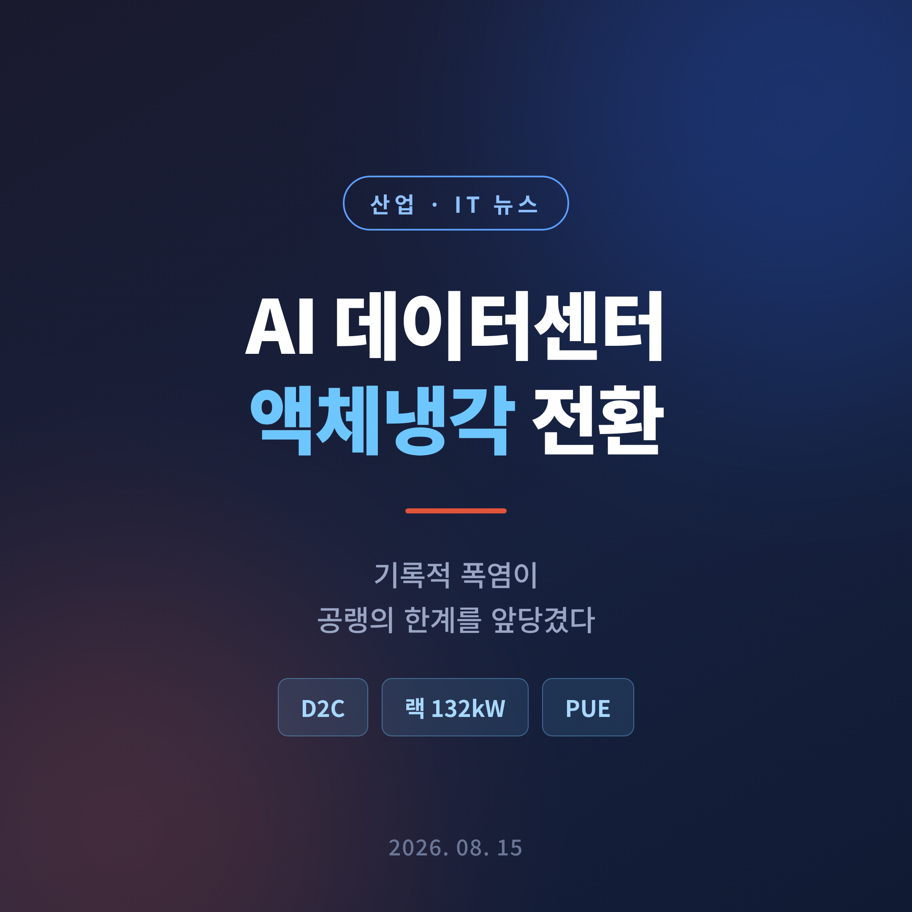
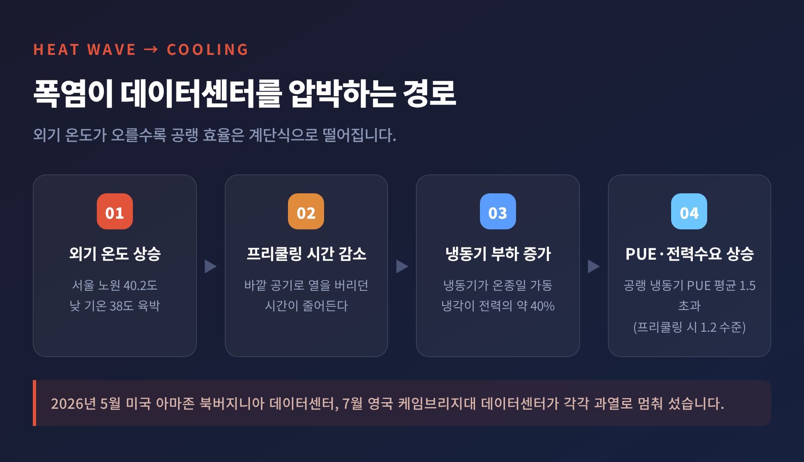
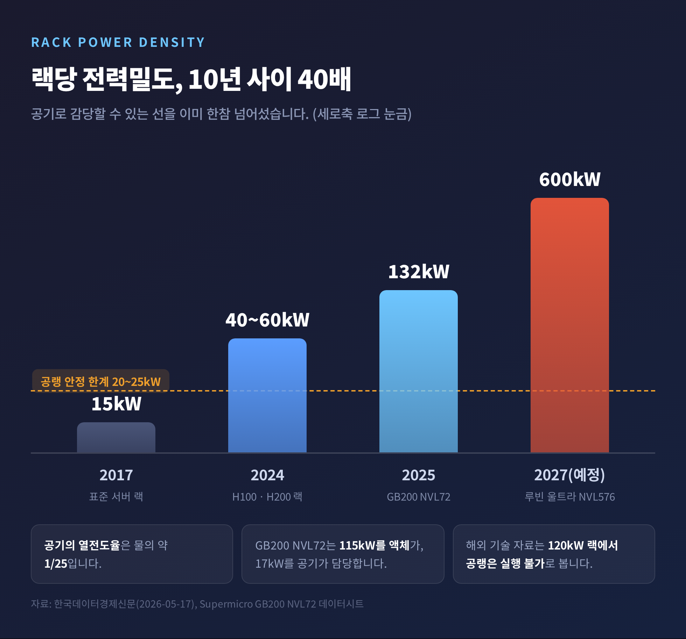
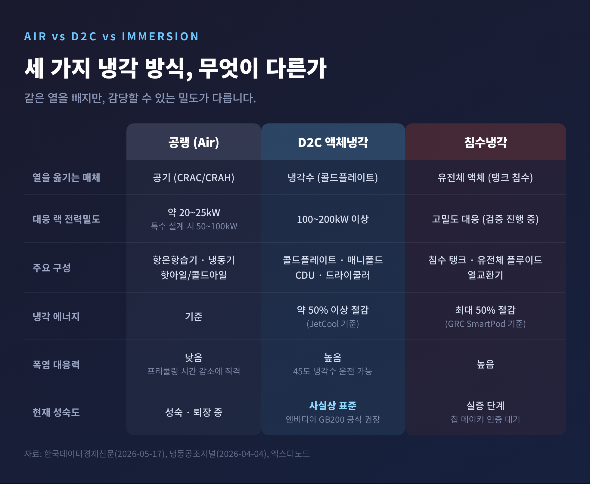
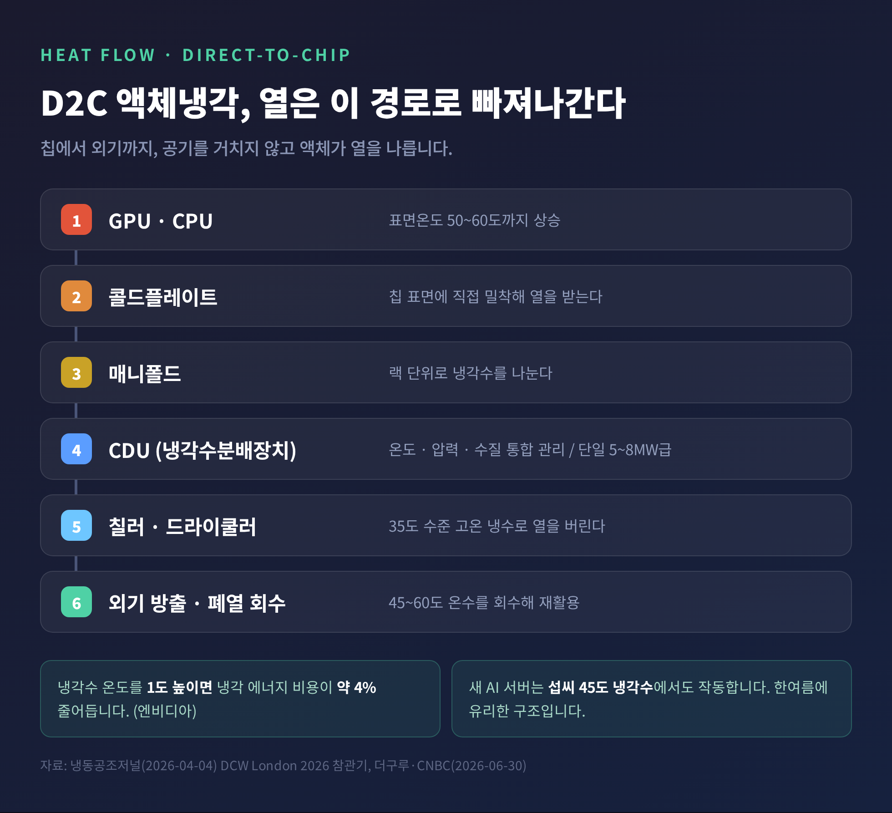
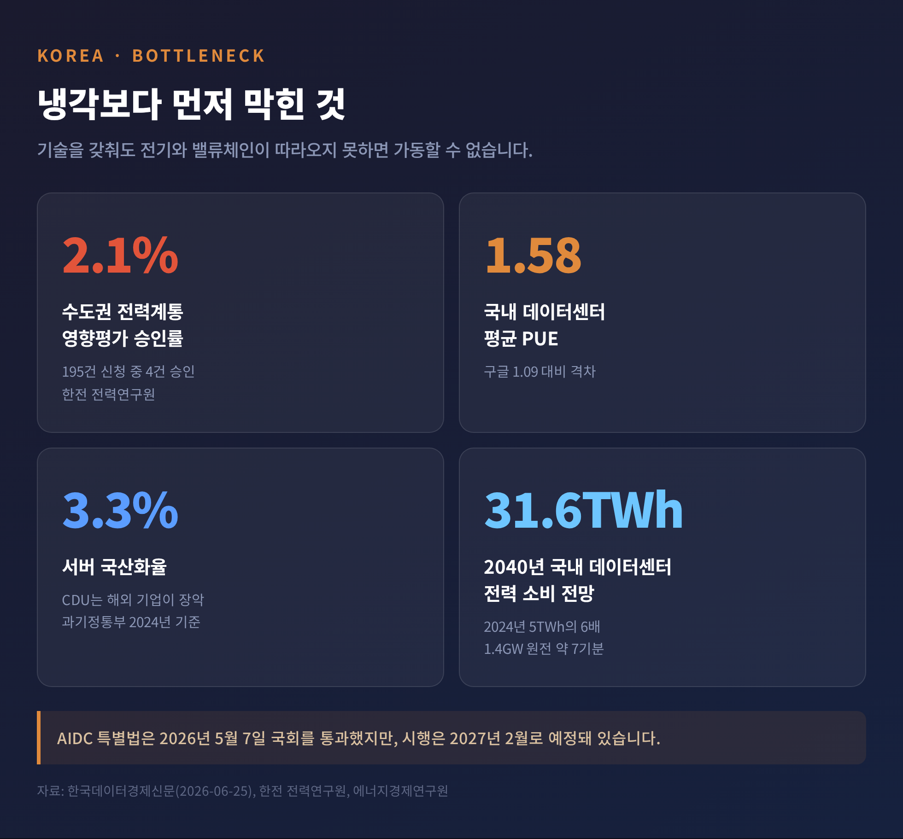

세 줄 요약
이번 글에서는 2026년 8월 현재 AI 데이터센터가 마주한 냉각 문제를 정리해 보겠습니다.
왜 공랭이 밀려나는지, 액체냉각이 무엇을 바꾸는지, 그리고 국내 산업에 어떤 기회와 부담이 남는지 순서대로 살펴보겠습니다.
지난 8월 7일 MBC 뉴스데스크가 국내 데이터센터 서버실 내부를 보도했습니다.
건물 밖 낮 기온이 38도에 육박하던 날, 서버실 안은 23도를 유지하고 있었습니다.
같은 날 서울 노원의 기온은 40.2도를 기록했습니다. 입추였습니다.
서버실 온도를 이렇게 낮게 잡는 데는 이유가 있습니다.
고성능 GPU의 표면온도는 50~60도까지 오릅니다. 이 열을 제때 빼지 못하면 연산 속도가 떨어지고, 장시간 노출되면 서버가 통째로 내려갑니다.
KT 네트워크부문 인프라AX연구팀의 이지혜 팀장은 "연산 처리의 속도가 낮아질 수 있고, 그게 장기적으로 노출되면 서버가 아예 내려가 버린다"고 설명했습니다.
국제 기준으로 보면 이 23도는 임의로 정한 숫자가 아닙니다.
공조 분야 표준을 만드는 ASHRAE의 열 가이드라인은 서버 흡입구 기준 권장 온도를 18~27도로, 허용 범위를 15~32도로 제시합니다. 고밀도 서버는 권장 범위를 18~22도로 더 좁게 봅니다.
현장의 23도는 이 권장 구간의 한가운데인 셈입니다.
경고가 아니라 이미 벌어진 일입니다.
2026년 5월 미국 아마존의 북버지니아 데이터센터가, 7월에는 영국 케임브리지대 데이터센터가 각각 과열로 멈춰 섰습니다.
폭염이 데이터센터를 압박하는 경로는 하나가 아닙니다.
첫째, 외기 온도가 오르면 프리쿨링(외기냉방)을 쓸 수 있는 시간이 줄어듭니다.
바깥 공기가 차가울 때는 냉동기를 거의 돌리지 않고도 열을 버릴 수 있습니다. 그 시간이 사라지면 냉동기가 온종일 돌아갑니다.
업계 자료에 따르면 전통적 공랭식 냉동기를 쓸 때 PUE(전력사용효율)는 평균 1.5를 넘고, 프리쿨링을 활용하면 평균 1.2 수준까지 내려간다고 알려졌습니다. 프리쿨링 시간이 줄면 그만큼 PUE가 되올라갑니다.
둘째, 냉각에 들어가는 전력 자체가 큽니다.
KAIST 김창익 교수는 데이터센터 전력의 약 40%가 냉각에 쓰인다고 설명했습니다. CNBC 보도에 인용된 업계 추정치도 같은 40% 선입니다. 두 자료가 일치합니다.
셋째, 이 부담이 국가 전력망과 맞물립니다.
올해 8월 5일 국내 일일 최대 전력수요는 94.4GW로 전망돼 역대 5위권에 들었고, 8월 둘째 주에는 95GW 안팎까지 올라섰습니다. 정부는 여름철 최대수요가 역대 최대인 98.8GW까지 갈 수 있다고 봤습니다.
데이터센터가 더 세게 냉방할수록, 전력망도 더 뜨거워집니다.

보험업계도 이 변화를 숫자로 읽고 있습니다.
취리히보험의 패트릭 맥브라이드 책임자는 "지난 3년간 기상이변은 미국 데이터센터 건설위험 포트폴리오의 최대 손실 원인이 됐다"고 말했습니다. 기후 분석업체 퍼스트스트리트는 전 세계 데이터센터 용량의 79%가 홍수·강풍·산불 같은 급성 기후위험에 노출돼 있다고 분석했습니다.
폭염은 방아쇠일 뿐입니다. 진짜 원인은 랙 안에 있습니다.
2017년 표준 서버 랙의 전력밀도는 15kW였습니다. 대형 선풍기에 비유되는 CRAC 유닛만으로 충분했습니다.
2024년 H100·H200 GPU가 들어간 AI 랙은 40~60kW로 올라갔습니다.
2025년 출시된 엔비디아 GB200 NVL72는 랙 하나가 약 132kW를 씁니다. 이 가운데 115kW를 액체가, 17kW를 공기가 담당합니다.
젠슨 황 엔비디아 CEO는 2026년 3월 GTC에서 2027년 하반기 출시 예정인 루빈 울트라 NVL576 카이버 랙이 600kW를 소비할 것이라고 밝혔습니다. "각 랙이 600kW이며 250만 개의 부품으로 구성된다"는 말이었습니다.
10년 사이 40배입니다.

여기에 물리 법칙이 개입합니다.
공기의 열전도율은 물의 약 25분의 1입니다. 같은 부피로 나를 수 있는 열의 양이 애초에 다릅니다.
업계에서는 공랭이 안정적으로 감당할 수 있는 선을 랙당 20~25kW로 봅니다. 특수 설계를 동원해도 50~100kW가 상한이라는 견해가 함께 존재합니다. 어느 기준을 택하든 132kW는 그 바깥입니다.
해외 기술 자료들이 "120kW 랙 밀도에서 공랭은 실행 불가능하다"고 못 박는 이유입니다.
한밭대 조진균 교수의 설명이 간명합니다.
"공냉식은 차가운 공기를 서버 구석구석까지 분배해야 해서 손실이 굉장히 많습니다. 수냉식은 공냉식 대비 절반 수준의 에너지로 같은 냉각 효과를 냅니다."
델프트공대 컴퓨터과학·공학연구소의 케스 퓌크 소장은 더 단호합니다.
"최고 수준의 컴퓨팅과 AI를 원한다면 액체 냉각이 필요합니다. 다른 선택의 여지가 없습니다."
액체냉각에도 갈래가 있습니다.
D2C(Direct-to-Chip, 직접 액체냉각) 는 콜드플레이트를 CPU와 GPU 표면에 직접 붙이고 그 안으로 냉각수를 흘리는 방식입니다. 엔비디아가 GB200 배치에 공식 권장하는 방식이기도 합니다.
NHN클라우드 이일준 기술사업부장은 이를 "찬물과 냄비를 직접 맞닿게 하는 것"에 비유했습니다.
침수냉각(Immersion, 국내에서는 액침냉각·침지냉각으로도 부릅니다) 은 서버를 통째로 전기가 통하지 않는 액체에 담그는 방식입니다. 액체가 끓지 않는 단상형과, 기화 잠열로 열을 빼는 이상형으로 나뉩니다.
RDHx는 랙 뒷문에 열교환기를 다는 중간 단계입니다.
업계 평가는 갈리지 않습니다. 슈퍼마이크로 김철원 전무는 지난 3월 대한설비융합협회 데이터센터 컨퍼런스에서 D2C 방식이 가장 현실적이고 확장성이 높다고 정리했습니다.

D2C는 콜드플레이트 하나로 끝나지 않습니다.
칩에서 뽑아낸 열은 매니폴드를 타고 CDU(냉각수분배장치)로 모입니다. CDU는 온도와 압력, 수질까지 통합 관리하는 심장 역할을 합니다.
지난 3월 DCW 런던 2026 전시를 참관한 하이멕 홍민호 부문사장에 따르면, 최근 트렌드는 단일 유닛 5~8MW급, 모듈을 붙이면 10MW 이상까지 대응하는 대용량 CDU입니다. GPU 부하에 맞춰 모듈을 끼워 넣는 핫스왑형 CDU도 확산 중입니다.
냉열원도 바뀌었습니다. 35도 수준의 고온 냉수와 드라이쿨러를 쓰는 구조로 옮겨가고 있습니다.

역설처럼 들리지만, 액체냉각은 냉각수를 더 뜨겁게 씁니다.
엔비디아는 "새 AI 서버는 섭씨 45도 냉각수에서도 작동할 수 있으며, 냉각기 온도를 1도 높이면 냉각 에너지 비용을 약 4% 줄일 수 있다"고 밝혔습니다.
냉각수 온도를 높일 수 있다는 것은, 한여름에도 냉동기 대신 드라이쿨러로 버틸 여지가 커진다는 뜻입니다. 폭염에 강한 구조가 되는 셈입니다.
덤도 있습니다. 액체냉각은 45~60도의 온수를 회수할 수 있어 폐열 재활용의 경제성이 달라집니다.
시장은 이미 움직였습니다.
다만 규모 전망은 기관마다 크게 다릅니다. 글로벌 액체냉각 시장을 두고 프리시던스 리서치는 2035년 258억 달러, 리서치 네스터는 443.9억 달러를 제시합니다. 연평균 성장률도 18.61%에서 31.5%까지 벌어집니다.
'액체냉각'에 침수냉각과 RDHx를 어디까지 포함하느냐에 따라 정의가 달라지기 때문입니다. 그래도 최솟값조차 2025년 시장의 5배가 넘습니다. 방향은 하나입니다.
국내에서도 밸류체인이 짜이는 중입니다.
여기까지는 좋은 소식입니다. 그다음은 아쉬운 쪽입니다.
정보통신기획평가원(IITP)이 추정한 국내 클라우드 사업자의 데이터센터 기술 국산화율은 1% 미만입니다. 과기정통부 기준 2024년 서버 국산화율은 3.3%에 그칩니다.
CDU 시장은 버티브, 슈나이더 일렉트릭, 쿨IT 시스템즈, 아세텍 같은 해외 기업이 장악하고 있습니다. 버티브 한 곳의 2025년 매출이 102.3억 달러였습니다.
IITP는 2025년부터 2031년까지 7년간 약 1조 원을 투입해 국산화율을 20%까지 끌어올린다는 목표를 내놨습니다. 1%에서 20%까지의 거리는 짧지 않습니다.
(이 문단은 산업 구조를 설명하기 위한 것이며, 특정 종목에 대한 투자 권유가 아닙니다.)
냉각 기술을 아무리 잘 갖춰도 전기가 안 들어오면 소용이 없습니다.
한전 전력연구원에 따르면 2024년 8월부터 2025년 6월까지 접수된 수도권 데이터센터 전력계통영향평가 신청은 195건, 20GW 규모였습니다. 이 가운데 최종 승인은 4건, 승인률 2.1%였습니다.
건물을 다 짓고도 전기를 못 받아 가동하지 못하는 상태가 일상이 됐다는 뜻입니다.
국내 데이터센터 입지의 60%, 전력수요의 70%가 수도권에 몰려 있는 구조 탓입니다. 345kV 송전선로 하나 짓는 데 평균 13년이 걸립니다.
제도는 이제 움직이기 시작했습니다.
2026년 5월 7일 국회를 통과한 AIDC 특별법은 비수도권 AI 데이터센터의 전력계통영향평가를 면제하고, 인허가 150일 처리 타임아웃제와 직접 전력구매계약(PPA) 특례를 담았습니다. 시행은 2027년 2월로 예정돼 있습니다.
기업들은 이미 비수도권으로 움직였습니다. SK텔레콤과 AWS의 울산 103MW 프로젝트, 삼성SDS 컨소시엄의 전남 해남 투자가 그 흐름 위에 있습니다.

물 문제도 조용하지 않습니다.
국제 로펌 화이트앤케이스 보고서는 1MW급 데이터센터가 간접 증발 냉각을 쓸 경우 연간 최대 2,550만 리터의 물을 쓸 수 있다고 분석했습니다. 미국 EESI는 데이터센터가 끌어온 물의 약 80%가 증발한다고 봤습니다.
구글은 2024년 한 해 데이터센터에서 약 306억 리터를 썼습니다. 전년 대비 28% 늘었습니다.
미국 애리조나주 메사시에서는 하루 최대 1,500만 리터 물 사용 허가를 두고 주민 반발이 일었고, 칠레에서는 2019년부터 환경단체 시위가 이어졌습니다.
국내는 사정이 조금 다릅니다. 갈등이 없어서가 아니라, 숫자가 공개되지 않아서입니다.
녹색전환연구소 김병권 연구위원은 "해외 주요 기업들이 물 사용 효율성(WUE) 지표를 공개하는 것과 달리, 국내 기업들은 측정 및 공개가 미흡하다"고 지적했습니다.
참고로 해외 기업의 WUE는 마이크로소프트 약 0.30L/kWh, 메타 약 0.20L/kWh, AWS 약 0.15L/kWh 수준으로 알려졌습니다.
규제는 유럽이 앞서 있습니다. 독일은 에너지효율법에 따라 2026년부터 신규 데이터센터에 PUE 기준을, 2027년부터 재생에너지 조달 요건을 적용합니다. 유럽위원회는 올해 1분기 '데이터센터 에너지효율 패키지'를 내놓을 예정이었습니다.
전망을 세 가지로 정리해 보겠습니다.
첫째, D2C는 표준이 됩니다.
2027년 하반기 600kW 랙이 나오는 로드맵이 공개된 이상, 액체냉각은 옵션이 아닙니다. 설계 단계에서부터 CDU와 매니폴드가 들어가는 것이 기본이 됩니다.
둘째, 침수냉각은 아직 문 앞에 있습니다.
엔비디아가 침수냉각 인증에 신중한 태도를 유지하고 있기 때문입니다. 장비업계에서는 2027년 루빈 울트라 세대에서 본격 채택될 가능성을 이야기하지만, 확정된 것은 없습니다. D2C와 침수냉각을 같은 것으로 묶어 보면 판단을 그르칩니다.
셋째, 냉각의 다음 무대는 실리콘 내부입니다.
마이크로소프트는 지난해 9월 스위스 스타트업 코린티스와 함께 칩 안에 미세 유로를 새기는 마이크로유체 냉각 실증에 성공했습니다. 콜드플레이트 대비 열 제거 성능이 최대 3배, GPU 실리콘 내부 최대 온도 상승폭이 65% 줄었습니다.
마이크로소프트의 사시 마제티 매니저는 "5년 안에 여전히 전통적인 콜드플레이트에 의존한다면 막다른 길에 몰린다"고 경고했습니다.
물론 한계도 인정해야 합니다.
액체냉각은 초기 투자비가 큽니다. 기존 공랭 데이터센터를 개조하는 일은 신축보다 훨씬 까다롭습니다. 배관 누수 관리, 수질 관리, 유지보수 인력이라는 새로운 숙제도 함께 옵니다.
그리고 냉각을 아무리 개선해도 전력 병목은 따로 풀어야 할 문제로 남습니다.
정리하면 이렇습니다.
예전에는 냉각이 서버를 지키는 부속 설비였습니다. 지금은 데이터센터를 어디에 지을지, 몇 kW를 넣을지, 얼마를 벌지를 먼저 결정하는 조건이 됐습니다.
"냉각은 더 이상 부속 설비가 아니라 설계의 출발점입니다."
올여름의 폭염은 그 사실을 앞당겨 확인시켜 주었을 뿐입니다.
내년 여름에도 같은 뉴스가 반복될 것이냐고 물으신다면, 준비한 곳과 그러지 못한 곳의 차이가 훨씬 선명해질 것이라고 답하겠습니다.